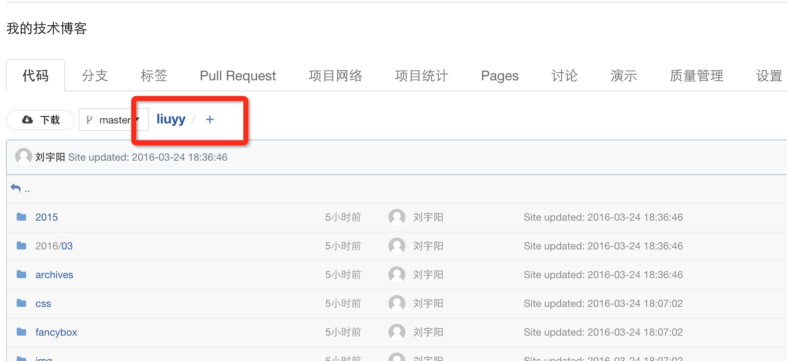
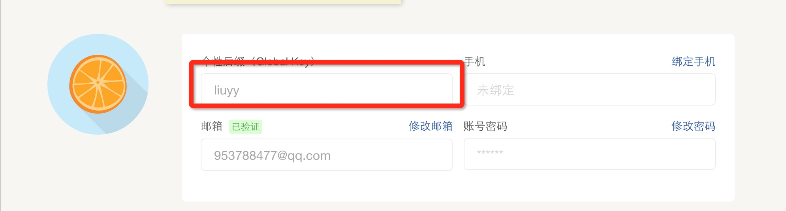

毕业以来，尝试过用各种手段写博客，先是csdn的博客专栏谢了几篇文章之后，就懒了，只到去年，学习了markdown语法写博客，觉得非常好用，于是也开始用farbox写博客，最近接触一个hexo加上github的pages服务搭建博客，于是尝试下，犹豫github在国内的访问速度实在是不太好，我用coding代替.
准备环境
1.NODE
犹豫hexo是基于node开发的，所以node环境是必须的
2.git
node的包管理都是需要使用git来down包的，我们提交文章和代码也需要用到git
3.coding账号
我们需要使用到 coding 的pages服务搭建博客，如果觉得coding的逼格不够的话，可以看下这篇文章HEXO+Github,搭建属于自己的博客
安装hexo
NODE 和 GIT 都安装好了之后就可以下载安装 hexo1
npm install -g hexo
国内的访问外网会有点慢，最好把npm仓库源设置为淘宝镜像1
2npm config set registry https://registry.npm.taobao.org
npm config set disturl https://npm.taobao.org/dist
安装完成之后新建一个文件夹，进入文件夹内执行 init 命令1
2
3mkdir blog
cd blog
hexo init
init之后会看到文件下有了如下结构的文件
生成静态文件，本地启服务器调试
上面图片中的source目录就是存在我们文章地址的地方，文章用markdown语法编写，hexo还会自动解析，并进行分类和归档；执行以下命令可以生成静态文件1
hexo generate
本地启动服务器调试1
hexo server
启动成功之后访问http://localhost:4000就可以看到你的主页啦，到此搭建工作就算基本完成了
部署博客到coding上
再coding上新建一个仓库，保证你的项目名称和用户名（个性后缀）一致，不然加载资源文件可能会有问题


更改 _config.yml 文件中的配置,一般在最后一行1
2
3
4deploy:
type: git
repository: https://git.coding.net/liuyy/liuyy.git
branch: master
执行deploy命令1
hexo deploy
如果出现报错，先检查你的配置git地址是否正确，”:”号后面一定要跟一个空格,如果都没有问题则再安装一个包，1
npm install hexo-deployer-git --save
执行完成之后，去coding的项目目录项，开启pages服务,开启之后访问http://[user_name].coding.me,好了，大功告成。
关于hexo的图片处理
我从farbox中把原来的文章迁移过来，发现好多的图片都显示，再hexo中你要现先设置
post_asset_folder: true
设置完成之后，每一个markdown文件都有一个相同的名称的文件夹（迁移过来的文章是没有的需要自己创建）用来存储使用到的图片，再文章中，url只用写文件名称即可1

关于markdown编辑
markdown的语法，大家看这篇文档就可以了，我就不多介绍了 Markdown语法说明
如果喜欢sublime编辑器的朋友我推荐使用下面两个markdown编辑的插件
MarkdownEditing 它可以提供markdown文件很漂亮的语法高亮
Markdown Preview markdown文件实时预览插件
最后
特别鸣谢，曾老师 对我搭建博客上的帮助；